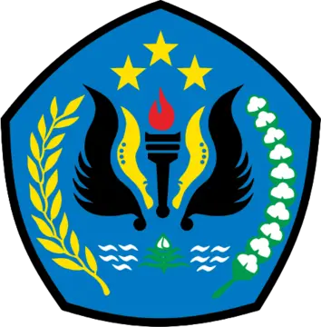
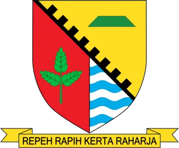
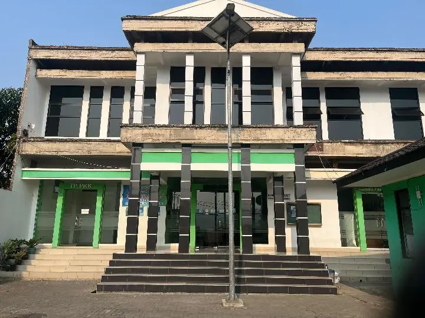
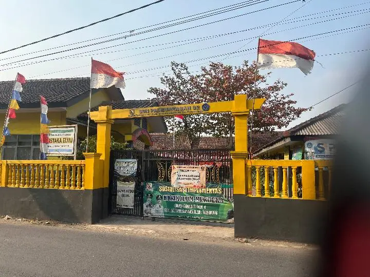
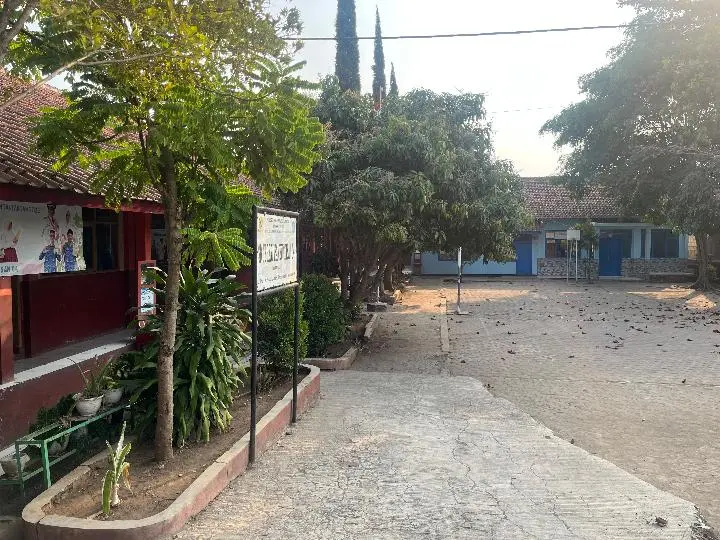
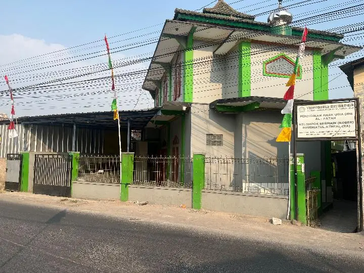
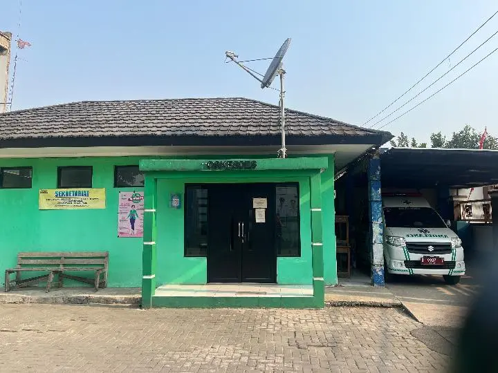
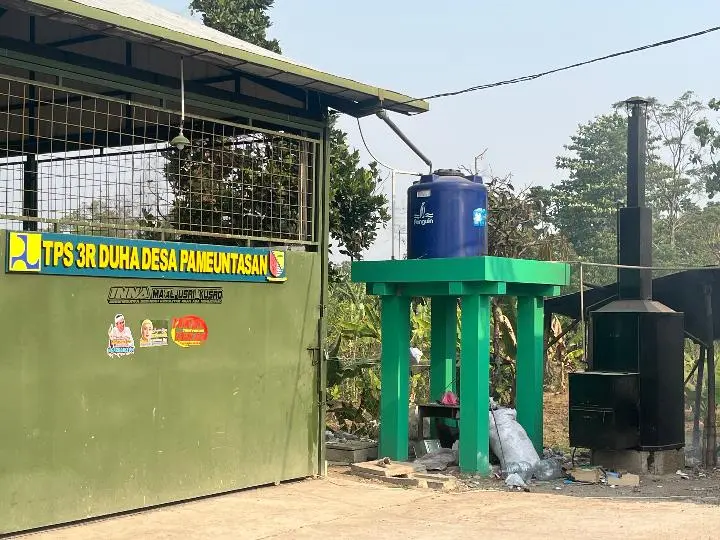
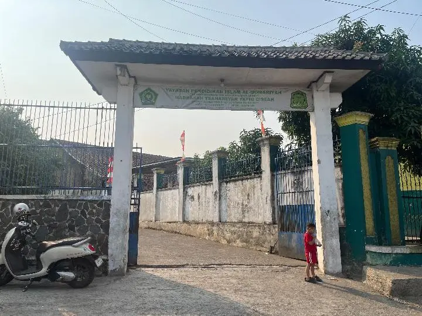

Program unggulan KKN UNLA 2026
Pameuntasan
dalam satu peta.
Kenali wilayah, temukan fasilitas publik, dan akses informasi desa melalui peta yang dirancang jelas untuk seluruh warga.
13 RW
33 RT
A0 Landscape


KolaborasiKampus × Desa × Warga
PREMIUM
Peta utama
Satu pandangan,
lebih mudah dipahami.
Warna membedakan 13 wilayah RW. Simbol fasilitas, label, dan foto membantu warga mengenali titik penting di Desa Pameuntasan.
Informasi untuk warga. Peta ini merupakan media informasi program KKN. Penetapan batas resmi tetap mengikuti data dan keputusan pemerintah yang berwenang.
Dokumentasi fasilitas
Kenali tempatnya.
Temukan titiknya.
Foto asli dipasangkan dengan nama dan titik koordinat agar informasi di peta terasa nyata, dekat, dan tidak membingungkan.

Pemerintahan RT 01 / RW 05Kantor Desa PameuntasanLihat titik ↗
Pendidikan Kp. Saneke · NPSN 20205407SDN Pameuntasan 02Lihat titik ↗
Pendidikan NPSN 20205418SDN Pameuntasan 04Lihat titik ↗
Pendidikan Kompleks Al-Fatah · RW 08PAUD Al-FatahKOBER + RA ↗
Kesehatan Satu kompleks dengan Kantor DesaPoskesdes PameuntasanLihat titik ↗
Lingkungan Tanah carik · Kp. Kubang RW 02TPS3R DUHALihat area indikatif ↗
Pendidikan Kompleks YAPIQ · RW 01MTs YAPIQ CiseahLihat titik ↗Tentang program
Bukan sekadar peta
yang ditempel.
Peta ini dirancang sebagai jembatan informasi: mudah dibaca warga, membantu mengenali fasilitas, sekaligus menjadi dokumentasi program unggulan KKN Universitas Langlangbuana di Desa Pameuntasan.
Kumpulkan dataBatas, fasilitas, foto, dan koordinat
Susun visualWarna RW, ikon, label, dan indeks
Bagikan ke wargaPapan peta, PDF, dan portal QR
Terhubung dengan kami
Ada pertanyaan
atau masukan?
Hubungi satu pintu Admin KKN Desa Pameuntasan. Pesan akan diteruskan kepada anggota kelompok yang menangani informasi terkait.